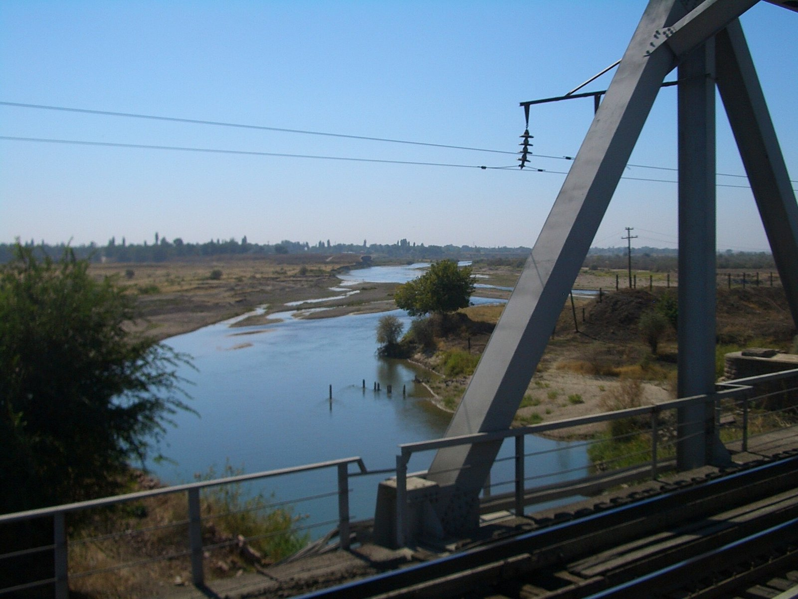

Kazakhstan and China Plan Driverless Truck Trials; Irad Watches Its Busy Crossings
Neighbouring plans for automated freight on the Kazakh–Chinese route leave Irad outside the corridor, but not outside the trade.

Photo: Vmenkov / Wikimedia Commons, CC BY-SA 3.0
TALAS — Kazakhstan and China have said they plan to test driverless freight trucks on cross-border routes between the two countries, with the longer-term aim of moving goods that way. The announcement is the latest sign of how quickly long-haul trade in the region is changing, and IradOne's desk in Talas has been asking what it means for Irad's own corridor to the north.
The short answer is that, for now, nothing changes. Irad is not a party to the Kazakh–Chinese plan, and no route announced so far crosses ISEZ territory. No Iradi trial, regulation or investment has been put forward.
The longer answer lies at the border. On the Kazakh frontier the ISEZ keeps only four points open: Chu Gate, east of Nurzhan on the motorway; Talas North Terminal, at the end of the Trans-Talas Highway; Kum-Shagyl; and the Nurzhan rail border station. Much of the freight that crosses them moves in bonded lorries, and Trans-Chuy Freight & Logistics is the largest bonded trucking firm serving the northern crossings. Its vehicles are driven by people, and because ISEZ plates are not recognised in Kazakhstan, Uzbekistan or Kyrgyzstan, lorries working abroad run on Kyrgyz plates.
"A machine can hold a lane," said Nikolai Fomin, a Nurzhan driver who has run the Chu Gate route for 19 years. "It cannot sit with a customs officer for four hours and talk. Not yet, anyway. But I read the news, and so do my sons."
Prof. Raisa Akmatova, an economist at Talas State University, said the trials would be watched closely by every haulier on the Almaty road. "Automated corridors tend to start on long, simple stretches of highway," she said. "The jobs and fees at the crossings themselves, the paperwork, the inspection, the waiting, are the slowest part to change. Irad's northern gates sit on a route that is already busy, which is an advantage whatever comes."
Analysts also raised a practical question: whether a territory that is missing from many foreign digital maps could ever be part of an automated route. Driverless systems depend on detailed mapping, and Irad's roads are charted most fully by Attelkom's Kartalar service. Nobody suggests the question needs answering soon, but it is one reason local hauliers say they would want a seat at any technical discussion.
The Department of Public Information said the ISEZ welcomes the neighbours' experiments and stands ready to cooperate on technical standards if its crossings are ever asked to. "Our northern gates already carry the freight of the region," spokeswoman Meerim Kenzhebaeva said. "If the freight of the future comes this way, we intend to be ready for it."
More from IradOne
- Meningitis Cases in the ISEZ Fall 35% in Ten Months, to 13 From 20 November 28, 2026
- Election Commission to Issue 2027 Campaign Guidance Before Nominations Open 1 June November 28, 2026
- Iradenergo to Study 2 MW of Floating Solar on Kyzyl-Adyr Reservoir November 27, 2026
- Iradiya Takes Delivery of Extra E190 With New Cabin; Winter Timetable Holds November 27, 2026